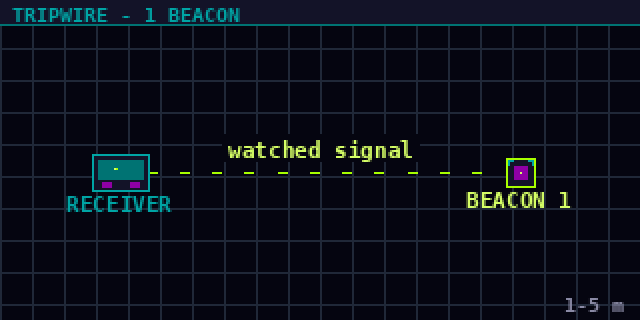
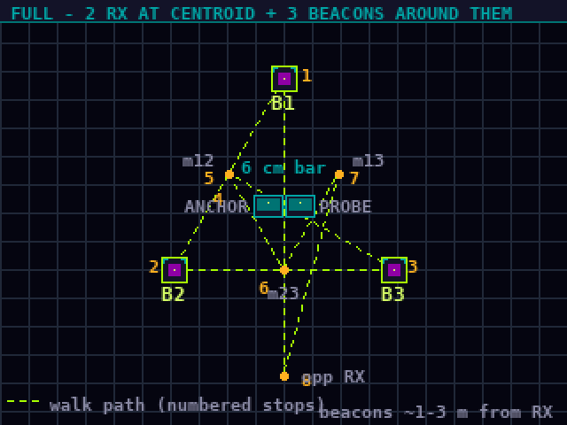

Pick what you're flashing and which board you have plugged in.
Flash flow
Plug in with a USB data cable
(not charge-only).
Pick device role & board above.
Click Connect & Flash,
pick the port in the browser dialog.
Wait 20-60 s. When done, unplug + re-plug to boot.
If a device won't connect
Hold BOOT while plugging in
to force flash mode.
Try a different USB cable — many "charging" cables have
no data lines.
XIAO: hold BOOT + tap RESET, release RESET first.
How to place the boards
Tripwire (1 beacon)

Receiver and beacon 1–5 m apart,
at similar height.
Anything crossing the line between them will register.
Skip walk-cal — tripwire mode goes straight from empty-room
baseline to running.
Full mode (2 receivers + 3 beacons)

Beacons roughly triangular,
similar height, 1–3 m spacing between them.
Receivers on a 6 cm bar — anchor
stays there for cal, probe walks with you.
During cal you'll visit each beacon, the centroid, three
edge midpoints, and a point behind the receiver bar.
The device tells you what to do at each stop.
Supported hardware
These are the exact boards this firmware targets. Buying
through the links below sends a small kickback our way at
no cost to you — it's how we keep this project going.
Thanks for the support.
LilyGo T-Display-S3
receiver × 1–2
ESP32-S3 with a 1.9″ ST7789 display. You'll want
two of these for full stereo mode, or one for solo.
If you run M5Launcher on a Cardputer or
Core2, you can boot MantisSec from the SD card instead of flashing
over USB.
Copy the merged image to the card and pick
it in the launcher. M5Launcher reads the partition table inside a
merged factory image and installs just the application, so the same
file works for the web flasher above, for esptool at
offset 0, and for the launcher.
The app-only image is a smaller download
the launcher also accepts. It cannot be flashed on its own over USB
— it has no bootloader and no partition table.
Optional MP3s in /mantis/alarms on the card. Every alarm
has a built-in fallback tone, so a missing file still makes a noise
— the alarms screen shows SD or tone
so you can see which one you are getting.